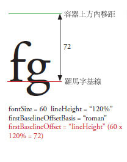
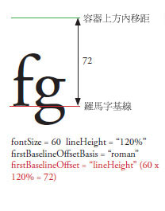
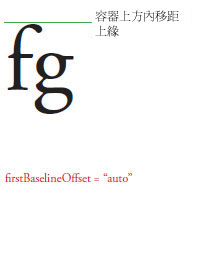
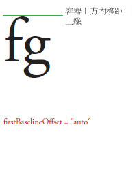
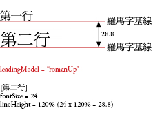
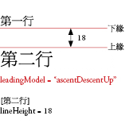
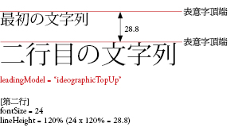

| 套件 | flashx.textLayout.formats |
| 介面 | public interface ITextLayoutFormat |
| 實作者 | ContainerController, FlowElement, TextLayoutFormat |
| 語言版本: | ActionScript 3.0 |
| 執行階段版本: | Flash Player 10, AIR 1.5 |
| 屬性 | 定義自 | ||
|---|---|---|---|
| alignmentBaseline : * [唯讀]
指定主基線對齊的基線。 | ITextLayoutFormat | ||
| backgroundAlpha : * [唯讀]
背景的 Alpha (透明度) 值 (如果重疊顯示時未定義，則採用預設值)。 | ITextLayoutFormat | ||
| backgroundColor : * [唯讀]
文字的背景色彩 (如果重疊顯示時未定義，則採用預設值)。 | ITextLayoutFormat | ||
| baselineShift : * [唯讀]
從 dominantBaseline 值位移基線的量。 | ITextLayoutFormat | ||
| blockProgression : * [唯讀]
指定行位置為垂直或水平走向。 | ITextLayoutFormat | ||
| breakOpportunity : * [唯讀]
將文字分為多行時，控制換行的位置。 | ITextLayoutFormat | ||
| cffHinting : * [唯讀]
用於此文字的 CFF 提示類型。 | ITextLayoutFormat | ||
| clearFloats : * [唯讀]
控制文字圍繞浮動圖的方式。 | ITextLayoutFormat | ||
| color : * [唯讀]
文字的色彩。 | ITextLayoutFormat | ||
| columnCount : * [唯讀]
文字欄的數目 (如果在重疊顯示時未定義，則採用預設值)。 | ITextLayoutFormat | ||
| columnGap : * [唯讀]
指定欄與欄之間的間距大小 (以像素為單位)，如果重疊顯示時未定義，則採用預設值。 | ITextLayoutFormat | ||
| columnWidth : * [唯讀]
以像素為單位的欄寬 (如果重疊顯示時未定義，則採用預設值)。 | ITextLayoutFormat | ||
| digitCase : * [唯讀]
用於此文字的數字大小寫類型。 | ITextLayoutFormat | ||
| digitWidth : * [唯讀]
用於此文字的數字寬度類型。 | ITextLayoutFormat | ||
| direction : * [唯讀]
指定文字區塊內之文字的預設雙向內嵌層級。 | ITextLayoutFormat | ||
| dominantBaseline : * [唯讀]
指定貼齊 alignmentBaseline 的元素基線，以決定行上元素的垂直位置。 | ITextLayoutFormat | ||
| firstBaselineOffset : * [唯讀]
指定容器中第一行的基線位置。 | ITextLayoutFormat | ||
| fontFamily : * [唯讀]
要使用的字體名稱，或是以逗號分隔的字體名稱清單。 | ITextLayoutFormat | ||
| fontLookup : * [唯讀]
要使用的字體查詢。 | ITextLayoutFormat | ||
| fontSize : * [唯讀]
以像素為單位的文字大小。 | ITextLayoutFormat | ||
| fontStyle : * [唯讀]
文字的樣式。 | ITextLayoutFormat | ||
| fontWeight : * [唯讀]
文字的粗細。 | ITextLayoutFormat | ||
| justificationRule : * [唯讀]
對齊段落中文字所使用的規則。 | ITextLayoutFormat | ||
| justificationStyle : * [唯讀]
段落對齊所用的樣式。 | ITextLayoutFormat | ||
| kerning : * [唯讀]
字距微調會調整某些字元組之間的像素，以改善可讀性。 | ITextLayoutFormat | ||
| leadingModel : * [唯讀]
指定行距模型，它結合了行距基礎及行距方向。 | ITextLayoutFormat | ||
| ligatureLevel : * [唯讀]
控制字體中定義的哪些連字可用於文字。 | ITextLayoutFormat | ||
| lineBreak : * [唯讀]
控制容器內的文字換行 (如果重疊顯示時未定義，則採用預設值)。 | ITextLayoutFormat | ||
| lineHeight : * [唯讀]
文字的行距控制。 | ITextLayoutFormat | ||
| lineThrough : * [唯讀]
若為 true，將套用刪除線，亦即通過文字中間的線。 | ITextLayoutFormat | ||
| linkActiveFormat : * [唯讀]
定義正常狀態下的連結格式屬性。 | ITextLayoutFormat | ||
| linkHoverFormat : * [唯讀]
當滑鼠在連結的邊緣之內 (或上方) 時，定義用於懸浮狀態下的連結格式屬性。 | ITextLayoutFormat | ||
| linkNormalFormat : * [唯讀]
定義正常狀態下的連結格式屬性。 | ITextLayoutFormat | ||
| listAutoPadding : * [唯讀]
當該邊上的清單邊框距離值為 auto 時，指定清單的開頭邊緣自動縮排。 | ITextLayoutFormat | ||
| listMarkerFormat : * [唯讀]
定義格式屬性清單標記。 | ITextLayoutFormat | ||
| listStylePosition : * [唯讀]
有效值為 ListStylePosition.INSIDE、ListStylePosition.OUTSIDE、FormatValue.INHERIT。若未定義預設值，則表示未設定。如果重疊顯示時未定義此屬性，則此屬性將繼承祖系的值。 | ITextLayoutFormat | ||
| listStyleType : * [唯讀]
有效值為 ListStyleType.UPPER_ALPHA、ListStyleType.LOWER_ALPHA、ListStyleType.UPPER_ROMAN、ListStyleType.LOWER_ROMAN、ListStyleType.NONE、ListStyleType.DISC、ListStyleType.CIRCLE、ListStyleType.SQUARE、ListStyleType.BOX、ListStyleType.CHECK、ListStyleType.DIAMOND、ListStyleType.HYPHEN、ListStyleType.ARABIC_INDIC、ListStyleType.BENGALI、ListStyleType.DECIMAL、ListStyleType.DECIMAL_LEADING_ZERO、ListStyleType.DEVANAGARI、ListStyleType.GUJARATI、ListStyleType.GURMUKHI、ListStyleType.KANNADA、ListStyleType.PERSIAN、ListStyleType.THAI、ListStyleType.URDU、ListStyleType.CJK_EARTHLY_BRANCH、ListStyleType.CJK_HEAVENLY_STEM、ListStyleType.HANGUL、ListStyleType.HANGUL_CONSTANT、ListStyleType.HIRAGANA、ListStyleType.HIRAGANA_IROHA、ListStyleType.KATAKANA、ListStyleType.KATAKANA_IROHA、ListStyleType.LOWER_ALPHA、ListStyleType.LOWER_GREEK、ListStyleType.LOWER_LATIN、ListStyleType.UPPER_ALPHA、ListStyleType.UPPER_GREEK、ListStyleType.UPPER_LATIN、FormatValue.INHERIT。若未定義預設值，則表示未設定。如果重疊顯示時未定義此屬性，則此屬性將繼承祖系的值。 | ITextLayoutFormat | ||
| locale : * [唯讀]
文字的地區。 | ITextLayoutFormat | ||
| paddingBottom : * [唯讀]
下方內移距 (以像素為單位)。 | ITextLayoutFormat | ||
| paddingLeft : * [唯讀]
左方內移距 (以像素為單位)。 | ITextLayoutFormat | ||
| paddingRight : * [唯讀]
右方內移距 (以像素為單位)。 | ITextLayoutFormat | ||
| paddingTop : * [唯讀]
上方內移距 (以像素為單位)。 | ITextLayoutFormat | ||
| paragraphEndIndent : * [唯讀]
指定段落結尾邊緣縮排量的數字 (以像素為單位)。 | ITextLayoutFormat | ||
| paragraphSpaceAfter : * [唯讀]
指定段落之後保留的間距大小的數字 (以像素為單位)。 | ITextLayoutFormat | ||
| paragraphSpaceBefore : * [唯讀]
指定段落之前保留的間距大小的數字 (以像素為單位)。 | ITextLayoutFormat | ||
| paragraphStartIndent : * [唯讀]
指定段落開頭邊緣縮排量的數字 (以像素為單位)。 | ITextLayoutFormat | ||
| renderingMode : * [唯讀]
用於此文字的顯示模式。 | ITextLayoutFormat | ||
| styleName : * [唯讀]
指定元素的識別類別，如此只要參照此 styleName就可以設定元素的樣式。 | ITextLayoutFormat | ||
| tabStops : * [唯讀]
指定段落關聯的定位停駐點。 | ITextLayoutFormat | ||
| textAlign : * [唯讀]
段落中各行相對於容器的對齊方式。 | ITextLayoutFormat | ||
| textAlignLast : * [唯讀]
段落中最後 (或唯一的) 一行相對於齊行文字中之容器的對齊方式。 | ITextLayoutFormat | ||
| textAlpha : * [唯讀]
文字的 Alpha (透明) 值。 | ITextLayoutFormat | ||
| textDecoration : * [唯讀]
文字上的裝飾。 | ITextLayoutFormat | ||
| textIndent : * [唯讀]
以像素為單位，指定段落中第一行縮排量的數字。 | ITextLayoutFormat | ||
| textJustify : * [唯讀]
指定對齊文字的選項。 | ITextLayoutFormat | ||
| textRotation : * [唯讀]
決定此文字要旋轉的度數。 | ITextLayoutFormat | ||
| trackingLeft : * [唯讀]
以像素為單位代表要套用至每個字元左側字距調整 (手動字距微調) 量的數字 (或 fontSize 的百分比，例如，120%)。 | ITextLayoutFormat | ||
| trackingRight : * [唯讀]
以像素為單位代表要套用至每個字元右側字距調整 (手動字距微調) 量的數字 (或 fontSize 的百分比，例如，120%)。 | ITextLayoutFormat | ||
| typographicCase : * [唯讀]
用於此文字的印刷大小寫類型。 | ITextLayoutFormat | ||
| verticalAlign : * [唯讀]
垂直對齊或齊行 (如果重疊顯示時未定義，則採用預設值)。 | ITextLayoutFormat | ||
| whiteSpaceCollapse : * [唯讀]
將文字匯入 TextFlow 時捨去或保留空格。 | ITextLayoutFormat | ||
| wordSpacing : * [唯讀]
指定對齊時要使用之文字間的最佳、最小和最大間距 (標準間距的倍數)。 | ITextLayoutFormat | ||
alignmentBaseline | 屬性 |
alignmentBaseline:* [唯讀] | 語言版本: | ActionScript 3.0 |
| 執行階段版本: | Flash Player 10, AIR 1.5 |
指定主基線對齊的基線。例如，如果設定 dominantBaseline 為 ASCENT，設定 alignmentBaseline 為 DESCENT 會使得文字上方對齊 DESCENT 基線，或在基線之下。通常是由字行中的最大元素決定基線。

有效值是 TextBaseline.ROMAN、TextBaseline.ASCENT、TextBaseline.DESCENT、TextBaseline.IDEOGRAPHIC_TOP、TextBaseline.IDEOGRAPHIC_CENTER、TextBaseline.IDEOGRAPHIC_BOTTOM、TextBaseline.USE_DOMINANT_BASELINE、FormatValue.INHERIT。
若未定義預設值，則表示未設定。
如果重疊顯示時未定義此屬性，則此屬性將繼承祖系的值。如果沒有祖系設定此屬性，則值將為 TextBaseline.USE_DOMINANT_BASELINE。
實作
public function get alignmentBaseline():*擲回值
RangeError — 設定時值不在此屬性的範圍內
|
相關 API 元素
範例 ( 如何使用本範例 )
alignmentBaseline 設為三個不同的值 - USE_DOMINANT_BASELINE、DESCENT 以及 IDEOGRAPHIC_CENTER - 表示在 dominantBaseline 設為 ASCENT 的段落三種範圍。
package flashx.textLayout.formats.examples {
import flash.display.Sprite;
import flash.text.engine.TextBaseline;
import flashx.textLayout.container.ContainerController;
import flashx.textLayout.elements.ParagraphElement;
import flashx.textLayout.elements.SpanElement;
import flashx.textLayout.elements.TextFlow;
import flashx.textLayout.formats.TextAlign;
public class TextLayoutFormat_alignmentBaselineExample extends Sprite
{
public function TextLayoutFormat_alignmentBaselineExample()
{
// create text flow with dominantBaseline of ASCENT and 3 spans
var textFlow:TextFlow = new TextFlow();
var paragraph:ParagraphElement = new ParagraphElement();
paragraph.fontFamily = "Helvetica";
paragraph.fontSize = 20;
paragraph.dominantBaseline = TextBaseline.ASCENT
var spanOne:SpanElement = new SpanElement();
var spanTwo:SpanElement = new SpanElement();
var spanThree:SpanElement = new SpanElement();
spanOne.text = "Hello, World ";
spanTwo.text = "Hello, World ";
spanThree.text = "Hello, World";
// add spans to paragraph and specify alignment baseline for each
paragraph.addChild(spanOne);
spanOne.alignmentBaseline = TextBaseline.USE_DOMINANT_BASELINE;
paragraph.addChild(spanTwo);
spanTwo.alignmentBaseline = TextBaseline.DESCENT;
paragraph.addChild(spanThree);
spanThree.alignmentBaseline = TextBaseline.IDEOGRAPHIC_CENTER;
// add paragraph to TextFlow and set container position
textFlow.addChild(paragraph);
this.x = 50;
this.y = 100;
// update controller to display on stage
textFlow.flowComposer.addController(new ContainerController(this,400,300));
textFlow.flowComposer.updateAllControllers();
}
}
}
backgroundAlpha | 屬性 |
backgroundAlpha:* [唯讀] | 語言版本: | ActionScript 3.0 |
| 執行階段版本: | Flash Player 10, AIR 1.5 |
背景的 Alpha (透明度) 值 (如果重疊顯示時未定義，則採用預設值)。值為 0 時表示完全透明，值為 1 時表示完全不透明。alpha 設為 0 的顯示物件都是作用中的狀態，即使看不見它們亦然。
有效值是從 0 到 1 的數字以及 FormatValue.INHERIT。
若未定義預設值，則表示未設定。
如果重疊顯示時未定義，則此屬性的值就會是 1。
實作
public function get backgroundAlpha():*擲回值
RangeError — 設定時值不在此屬性的範圍內
|
backgroundColor | 屬性 |
backgroundColor:* [唯讀] | 語言版本: | ActionScript 3.0 |
| 執行階段版本: | Flash Player 10, AIR 1.5 |
文字的背景色彩 (如果重疊顯示時未定義，則採用預設值)。可以是常數值 BackgroundColor.TRANSPARENT，或指定 3 個 8 位元 RGB (紅色、綠色、藍色) 值的 16 進位值；例如，0xFF0000 是紅色，而 0x00FF00 是綠色。
有效字串值為 BackgroundColor.TRANSPARENT、FormatValue.INHERIT 以及從 0x0 到 0xffffffff 的單位。
若未定義預設值，則表示未設定。
如果重疊顯示時未定義，則此屬性的值就會是 BackgroundColor.TRANSPARENT。
實作
public function get backgroundColor():*擲回值
RangeError — 設定時值不在此屬性的範圍內
|
相關 API 元素
baselineShift | 屬性 |
baselineShift:* [唯讀] | 語言版本: | ActionScript 3.0 |
| 執行階段版本: | Flash Player 10, AIR 1.5 |
從 dominantBaseline 值位移基線的量。單位為像素，或 fontSize 的百分比 (在此情況下，請輸入字串值，如 140%)。正值會將水平文字上移 (垂直文字則右移)，負值則會將水平文字下移 (垂直文字則左移)。
有效值是 BaselineShift.SUPERSCRIPT、BaselineShift.SUBSCRIPT、FormatValue.INHERIT。
有效值是從 -1000 到 1000 之間的數字。
有效值是從 -1000 到 1000 之間數字的百分比。
若未定義預設值，則表示未設定。
如果重疊顯示時未定義此屬性，則此屬性將繼承祖系的值。如果沒有祖系設定此屬性，則值將為 0.0。
實作
public function get baselineShift():*擲回值
RangeError — 設定時值不在此屬性的範圍內
|
相關 API 元素
blockProgression | 屬性 |
blockProgression:* [唯讀] | 語言版本: | ActionScript 3.0 |
| 執行階段版本: | Flash Player 10, AIR 1.5 |
指定行位置為垂直或水平走向。行由上到下 (BlockProgression.TB，用於水平文字) 排列，或由右向左 (BlockProgression.RL，用於垂直文字) 排列。
有效值是 BlockProgression.RL、BlockProgression.TB、FormatValue.INHERIT。
若未定義預設值，則表示未設定。
如果重疊顯示時未定義此屬性，則此屬性將繼承祖系的值。如果沒有祖系設定此屬性，則值將為 BlockProgression.TB。
實作
public function get blockProgression():*擲回值
RangeError — 設定時值不在此屬性的範圍內
|
相關 API 元素
breakOpportunity | 屬性 |
breakOpportunity:* [唯讀] | 語言版本: | ActionScript 3.0 |
| 執行階段版本: | Flash Player 10, AIR 1.5 |
將文字分為多行時，控制換行的位置。設定為 BreakOpportunity.AUTO 以一般方式斷行。設定為 BreakOpportunity.NONE 則文字不斷行，除非文字超過度量且沒有其他空間可斷行。。設定為 BreakOpportunity.ANY 可在任意位置斷行，而非只限於在單字之間斷行。設定為 BreakOpportunity.ALL 使每個印刷群集放置於個別行 (對路徑上的文字很實用)。
有效值為 BreakOpportunity.ALL、BreakOpportunity.ANY、BreakOpportunity.AUTO、BreakOpportunity.NONE、FormatValue.INHERIT。
若未定義預設值，則表示未設定。
如果重疊顯示時未定義此屬性，則此屬性將繼承祖系的值。如果沒有祖系設定此屬性，則值將為 BreakOpportunity.AUTO。
實作
public function get breakOpportunity():*擲回值
RangeError — 設定時值不在此屬性的範圍內
|
相關 API 元素
cffHinting | 屬性 |
cffHinting:* [唯讀] | 語言版本: | ActionScript 3.0 |
| 執行階段版本: | Flash Player 10, AIR 1.5 |
用於此文字的 CFF 提示類型。CFF 提示會決定 Flash 執行階段是否強制強式水平詞幹以符合子像素格線。只有當 renderingMode 屬性設定為 RenderingMode.CFF，且字體為內嵌時 (fontLookup 屬性設定為 FontLookup.EMBEDDED_CFF)，才會套用此屬性。在小型螢幕上，提示會為讀者產生清晰、易辨識的文字。
有效值為 CFFHinting.NONE、CFFHinting.HORIZONTAL_STEM、FormatValue.INHERIT。
若未定義預設值，則表示未設定。
如果重疊顯示時未定義此屬性，則此屬性將繼承祖系的值。如果沒有祖系設定此屬性，則值將為 CFFHinting.HORIZONTAL_STEM。
實作
public function get cffHinting():*擲回值
RangeError — 設定時值不在此屬性的範圍內
|
相關 API 元素
clearFloats | 屬性 |
clearFloats:* [唯讀] | 語言版本: | ActionScript 3.0 |
| 執行階段版本: | Flash Player 10, AIR 1.5 |
控制文字圍繞浮動圖的方式。若值為 none，將允許文字以最緊密的方式圍繞在浮動物件的四周。若值為 left，將導致文字略過含有左邊浮動物件之容器的任何部分；若值為 right，將導致文字略過含有右邊浮動物件之容器的任何部分。若值為 both，將導致文字略過所有的浮動物件。
有效值為 ClearFloats.START、ClearFloats.END、ClearFloats.LEFT、ClearFloats.RIGHT、ClearFloats.BOTH、ClearFloats.NONE、FormatValue.INHERIT。
若未定義預設值，則表示未設定。
如果重疊顯示時未定義，則此屬性的值就會是 ClearFloats.NONE。
實作
public function get clearFloats():*擲回值
RangeError — 設定時值不在此屬性的範圍內
|
相關 API 元素
color | 屬性 |
color:* [唯讀] | 語言版本: | ActionScript 3.0 |
| 執行階段版本: | Flash Player 10, AIR 1.5 |
文字的色彩。指定 3 個 8 位元 RGB (紅色、綠色、藍色) 值的 16 進位數字；例如 0xFF0000 為紅色，而 0x00FF00 為綠色。
若未定義預設值，則表示未設定。
如果重疊顯示時未定義此屬性，則此屬性將繼承祖系的值。如果沒有祖系設定此屬性，則值將為 0。
實作
public function get color():*擲回值
RangeError — 設定時值不在此屬性的範圍內
|
columnCount | 屬性 |
columnCount:* [唯讀] | 語言版本: | ActionScript 3.0 |
| 執行階段版本: | Flash Player 10, AIR 1.5 |
文字欄的數目 (如果在重疊顯示時未定義，則採用預設值)。欄的數目會覆寫其他的欄設定。值為整數，如果未指定值，則為 FormatValue.AUTO。如果未指定 columnCount，則會使用 columnWidth 建立容器內可容納的最大欄位數目。
有效字串值為 FormatValue.AUTO、FormatValue.INHERIT 以及從 1 至 50 的整數。
若未定義預設值，則表示未設定。
如果重疊顯示時未定義，則此屬性的值就會是 FormatValue.AUTO。
實作
public function get columnCount():*擲回值
RangeError — 設定時值不在此屬性的範圍內
|
相關 API 元素
columnGap | 屬性 |
columnGap:* [唯讀] | 語言版本: | ActionScript 3.0 |
| 執行階段版本: | Flash Player 10, AIR 1.5 |
指定欄與欄之間的間距大小 (以像素為單位)，如果重疊顯示時未定義，則採用預設值。值為數字
有效值是從 0 到 1000 的數字以及 FormatValue.INHERIT。
若未定義預設值，則表示未設定。
如果重疊顯示時未定義，則此屬性的值就會是 20。
實作
public function get columnGap():*擲回值
RangeError — 設定時值不在此屬性的範圍內
|
columnWidth | 屬性 |
columnWidth:* [唯讀] | 語言版本: | ActionScript 3.0 |
| 執行階段版本: | Flash Player 10, AIR 1.5 |
以像素為單位的欄寬 (如果重疊顯示時未定義，則採用預設值)。如果您指定欄的寬度，而非數目，則在具有容器寬度和 columnGap 設定的情況下，TextLayout 會儘可能建立符合該寬度的最大欄數。在最後一欄之後，任何剩餘的空格都是靠左對齊。值為數字。
有效字串值為 FormatValue.AUTO、FormatValue.INHERIT 以及從 0 到 8000 的數字。
若未定義預設值，則表示未設定。
如果重疊顯示時未定義，則此屬性的值就會是 FormatValue.AUTO。
實作
public function get columnWidth():*擲回值
RangeError — 設定時值不在此屬性的範圍內
|
相關 API 元素
digitCase | 屬性 |
digitCase:* [唯讀] | 語言版本: | ActionScript 3.0 |
| 執行階段版本: | Flash Player 10, AIR 1.5 |
用於此文字的數字大小寫類型。設定值為 DigitCase.OLD_STYLE 會使用不同的字母上緣和字母下緣模擬小寫字體。數字是等比例的間距。只有在選取的字樣中可使用此樣式，大部分是在補充或專業字體中。DigitCase.LINING 設定具有全部大寫字高度，而且通常在圖表中以固定間距排列。

有效值為 DigitCase.DEFAULT、DigitCase.LINING、DigitCase.OLD_STYLE、FormatValue.INHERIT。
若未定義預設值，則表示未設定。
如果重疊顯示時未定義此屬性，則此屬性將繼承祖系的值。如果沒有祖系設定此屬性，則值將為 DigitCase.DEFAULT。
實作
public function get digitCase():*擲回值
RangeError — 設定時值不在此屬性的範圍內
|
相關 API 元素
digitWidth | 屬性 |
digitWidth:* [唯讀] | 語言版本: | ActionScript 3.0 |
| 執行階段版本: | Flash Player 10, AIR 1.5 |
用於此文字的數字寬度類型。這可以是 DigitWidth.PROPORTIONAL (對於個別數字的顯示效果最佳) 或 DigitWidth.TABULAR (最適用於表格、圖表及垂直行中的數字)。

有效值為 DigitWidth.DEFAULT、DigitWidth.PROPORTIONAL、DigitWidth.TABULAR、FormatValue.INHERIT。
若未定義預設值，則表示未設定。
如果重疊顯示時未定義此屬性，則此屬性將繼承祖系的值。如果沒有祖系設定此屬性，則值將為 DigitWidth.DEFAULT。
實作
public function get digitWidth():*擲回值
RangeError — 設定時值不在此屬性的範圍內
|
相關 API 元素
direction | 屬性 |
direction:* [唯讀] | 語言版本: | ActionScript 3.0 |
| 執行階段版本: | Flash Player 10, AIR 1.5 |
指定文字區塊內之文字的預設雙向內嵌層級。由左向右的讀取順序，如同拉丁文樣式手寫體，或由右向左的讀取順序，如同阿拉伯文或希伯來文。在容器層級套用此屬性時，它也會影響欄方向。就像文字一樣，欄可以由左向右或由右向左。下面是一些範例：

有效值為 Direction.LTR、Direction.RTL、FormatValue.INHERIT。
若未定義預設值，則表示未設定。
如果重疊顯示時未定義此屬性，則此屬性將繼承祖系的值。如果沒有祖系設定此屬性，則值將為 Direction.LTR。
實作
public function get direction():*擲回值
RangeError — 設定時值不在此屬性的範圍內
|
相關 API 元素
dominantBaseline | 屬性 |
dominantBaseline:* [唯讀] | 語言版本: | ActionScript 3.0 |
| 執行階段版本: | Flash Player 10, AIR 1.5 |
指定貼齊 alignmentBaseline 的元素基線，以決定行上元素的垂直位置。TextBaseline.AUTO 的值根據父段落的 locale 屬性選取主基線。針對日文與中文，選取的基線值為 TextBaseline.IDEOGRAPHIC_CENTER；其他則為 TextBaseline.ROMAN。這些基線的選擇是由字體及字體大小的選擇所決定。
有效值為 FormatValue.AUTO、TextBaseline.ROMAN、TextBaseline.ASCENT、TextBaseline.DESCENT、TextBaseline.IDEOGRAPHIC_TOP、TextBaseline.IDEOGRAPHIC_CENTER、TextBaseline.IDEOGRAPHIC_BOTTOM、FormatValue.INHERIT。
若未定義預設值，則表示未設定。
如果重疊顯示時未定義此屬性，則此屬性將繼承祖系的值。如果沒有祖系設定此屬性，則值將為 FormatValue.AUTO。
實作
public function get dominantBaseline():*擲回值
RangeError — 設定時值不在此屬性的範圍內
|
相關 API 元素
firstBaselineOffset | 屬性 |
firstBaselineOffset:* [唯讀] | 語言版本: | ActionScript 3.0 |
| 執行階段版本: | Flash Player 10, AIR 1.5 |
指定容器中第一行的基線位置。此屬性參照的基線，是依據容器層級地區而定。對於日文和中文，它會是 TextBaseline.IDEOGRAPHIC_BOTTOM；而對於所有其他語言，則為 TextBaseline.ROMAN。從容器的上方內移距 (或如果 blockProgression 是 RL，則為右方內移距) 到首行基線的偏移量，可以是 BaselineOffset.ASCENT (相當於字行上緣)、BaselineOffset.LINE_HEIGHT (相當於首行高度)，或任何固定值數字，以指定絕對距離。BaselineOffset.AUTO 對齊字行上緣與容器上方內移距。
 
 

有效字串值為 BaselineOffset.AUTO、BaselineOffset.ASCENT、BaselineOffset.LINE_HEIGHT、FormatValue.INHERIT 以及從 0 到 1000 的數字。
若未定義預設值，則表示未設定。
如果重疊顯示時未定義此屬性，則此屬性將繼承祖系的值。如果沒有祖系設定此屬性，則值將為 BaselineOffset.AUTO。
實作
public function get firstBaselineOffset():*擲回值
RangeError — 設定時值不在此屬性的範圍內
|
相關 API 元素
fontFamily | 屬性 |
fontFamily:* [唯讀] | 語言版本: | ActionScript 3.0 |
| 執行階段版本: | Flash Player 10, AIR 1.5 |
要使用的字體名稱，或是以逗號分隔的字體名稱清單。Flash 執行階段會以清單中的第一個可用字體來顯示元素。例如，Arial, Helvetica, _sans 會讓 Player 先搜尋 Arial，如果找不到 Arial 則搜尋 Helvetica，如果這兩項都找不到，則搜尋 _sans。
若未定義預設值，則表示未設定。
如果重疊顯示時未定義此屬性，則此屬性將繼承祖系的值。如果沒有祖系設定此屬性，則值將為 Arial。
實作
public function get fontFamily():*擲回值
RangeError — 設定時值不在此屬性的範圍內
|
fontLookup | 屬性 |
fontLookup:* [唯讀] | 語言版本: | ActionScript 3.0 |
| 執行階段版本: | Flash Player 10, AIR 1.5 |
要使用的字體查詢。指定 FontLookup.DEVICE 使用執行 SWF 檔案之系統上所安裝的字體。裝置字體會導致影片大小變得較小，但文字在不同系統及平台間的顯示不盡相同。指定 FontLookup.EMBEDDED_CFF 使用內嵌於已發佈的 SWF 檔案的字體外框。內嵌的字體會增加 SWF 檔案的大小 (有時差距極大)，但文字會一律以所選的字體顯示。
有效值為 FontLookup.DEVICE、FontLookup.EMBEDDED_CFF、FormatValue.INHERIT。
若未定義預設值，則表示未設定。
如果重疊顯示時未定義此屬性，則此屬性將繼承祖系的值。如果沒有祖系設定此屬性，則值將為 FontLookup.DEVICE。
實作
public function get fontLookup():*擲回值
RangeError — 設定時值不在此屬性的範圍內
|
相關 API 元素
fontSize | 屬性 |
fontSize:* [唯讀] | 語言版本: | ActionScript 3.0 |
| 執行階段版本: | Flash Player 10, AIR 1.5 |
以像素為單位的文字大小。
有效值是從 1 到 720 的數字以及 FormatValue.INHERIT。
若未定義預設值，則表示未設定。
如果重疊顯示時未定義此屬性，則此屬性將繼承祖系的值。如果沒有祖系設定此屬性，則值將為 12。
實作
public function get fontSize():*擲回值
RangeError — 設定時值不在此屬性的範圍內
|
fontStyle | 屬性 |
fontStyle:* [唯讀] | 語言版本: | ActionScript 3.0 |
| 執行階段版本: | Flash Player 10, AIR 1.5 |
文字的樣式。可以是 FontPosture.NORMAL (用於純文字) 或 FontPosture.ITALIC (用於斜體字)。此屬性只套用到裝置字體 (fontLookup 屬性設定為 flash.text.engine.FontLookup.DEVICE)。
有效值是 FontPosture.NORMAL、FontPosture.ITALIC、FormatValue.INHERIT。
若未定義預設值，則表示未設定。
如果重疊顯示時未定義此屬性，則此屬性將繼承祖系的值。如果沒有祖系設定此屬性，則值將為 FontPosture.NORMAL。
實作
public function get fontStyle():*擲回值
RangeError — 設定時值不在此屬性的範圍內
|
相關 API 元素
fontWeight | 屬性 |
fontWeight:* [唯讀] | 語言版本: | ActionScript 3.0 |
| 執行階段版本: | Flash Player 10, AIR 1.5 |
文字的粗細。可以是 FontWeight.NORMAL (用於純文字) 或 FontWeight.BOLD。只套用到裝置字體 (fontLookup 屬性設定為 flash.text.engine.FontLookup.DEVICE)。
有效值為 FontWeight.NORMAL、FontWeight.BOLD、FormatValue.INHERIT。
若未定義預設值，則表示未設定。
如果重疊顯示時未定義此屬性，則此屬性將繼承祖系的值。如果沒有祖系設定此屬性，則值將為 FontWeight.NORMAL。
實作
public function get fontWeight():*擲回值
RangeError — 設定時值不在此屬性的範圍內
|
相關 API 元素
justificationRule | 屬性 |
justificationRule:* [唯讀] | 語言版本: | ActionScript 3.0 |
| 執行階段版本: | Flash Player 10, AIR 1.5 |
對齊段落中文字所使用的規則。預設值為 FormatValue.AUTO，可根據段落的 locale 屬性來對齊文字。除了日文與中文之外的所有語言，FormatValue.AUTO 會成為 JustificationRule.SPACE，可為空白字元增加額外的空間。針對日文與中文，FormatValue.AUTO 會成為 JustficationRule.EAST_ASIAN。對齊在某種程度上會變更標點符號的間距。在羅馬文字中，逗號與日文句號佔用完整的字元寬度，但是在東亞文字中，則只有一半的字元寬度。此外，在東亞文字中，連續標點符號之間的間距會變得較小，以遵循傳統東亞印刷慣例。請注意，下列範例中，行距會套用至段落的第二行。在東亞版本中，最後兩行向左推送。在羅馬版本中，第二行以及接續的字行向左推送。

有效值為 JustificationRule.EAST_ASIAN、JustificationRule.SPACE、FormatValue.AUTO、FormatValue.INHERIT。
若未定義預設值，則表示未設定。
如果重疊顯示時未定義此屬性，則此屬性將繼承祖系的值。如果沒有祖系設定此屬性，則值將為 FormatValue.AUTO。
實作
public function get justificationRule():*擲回值
RangeError — 設定時值不在此屬性的範圍內
|
相關 API 元素
justificationStyle | 屬性 |
justificationStyle:* [唯讀] | 語言版本: | ActionScript 3.0 |
| 執行階段版本: | Flash Player 10, AIR 1.5 |
段落對齊所用的樣式。只能與 JustificationRule.EAST_ASIAN 的 justificationRule 設定一起使用。FormatValue.AUTO 的預設值針對所有地區設定解析為 JustificationStyle.PUSH_IN_KINSOKU。JustificationStyle 類別定義的常數指定處理避頭尾字元 (不能在字行開頭或結尾出現的日文字元) 的選項。如果您要加寬文字，請指定 JustificationStyle.PUSH-OUT-ONLY。如果您想要讓行為的效果類似使用 JustificationRule.SPACE 的 justificationRule 的效果，請使用 JustificationStyle.PRIORITIZE-LEAST-ADJUSTMENT。
有效值為 JustificationStyle.PRIORITIZE_LEAST_ADJUSTMENT、JustificationStyle.PUSH_IN_KINSOKU、JustificationStyle.PUSH_OUT_ONLY、FormatValue.AUTO、FormatValue.INHERIT。
若未定義預設值，則表示未設定。
如果重疊顯示時未定義此屬性，則此屬性將繼承祖系的值。如果沒有祖系設定此屬性，則值將為 FormatValue.AUTO。
實作
public function get justificationStyle():*擲回值
RangeError — 設定時值不在此屬性的範圍內
|
相關 API 元素
kerning | 屬性 |
kerning:* [唯讀] | 語言版本: | ActionScript 3.0 |
| 執行階段版本: | Flash Player 10, AIR 1.5 |
字距微調會調整某些字元組之間的像素，以改善可讀性。具有特殊字距表的所有字體都支援特殊字距。
有效值為 Kerning.ON、Kerning.OFF、Kerning.AUTO、FormatValue.INHERIT。
若未定義預設值，則表示未設定。
如果重疊顯示時未定義此屬性，則此屬性將繼承祖系的值。如果沒有祖系設定此屬性，則值將為 Kerning.AUTO。
實作
public function get kerning():*擲回值
RangeError — 設定時值不在此屬性的範圍內
|
相關 API 元素
leadingModel | 屬性 |
leadingModel:* [唯讀] | 語言版本: | ActionScript 3.0 |
| 執行階段版本: | Flash Player 10, AIR 1.5 |
指定行距模型，它結合了行距基礎及行距方向。行距基礎是 lineHeight 屬性參照的基線。行矩方向決定 lineHeight 屬性參照的是某線條基線與其前線條之間的距離，或是與其後線條之間的距離。FormatValue.AUTO 的預設值乃是根據段落的 locale 屬性來解析。對於日文和中文，它會是 LeadingModel.IDEOGRAPHIC_TOP_DOWN，而對於所有其他語言，則是 LeadingModel.ROMAN_UP。
行距基礎：
  
行距方向：


有效值為 LeadingModel.ROMAN_UP、LeadingModel.IDEOGRAPHIC_TOP_UP、LeadingModel.IDEOGRAPHIC_CENTER_UP、LeadingModel.IDEOGRAPHIC_TOP_DOWN、LeadingModel.IDEOGRAPHIC_CENTER_DOWN、LeadingModel.APPROXIMATE_TEXT_FIELD、LeadingModel.ASCENT_DESCENT_UP、LeadingModel.BOX、LeadingModel.AUTO、FormatValue.INHERIT。
若未定義預設值，則表示未設定。
如果重疊顯示時未定義此屬性，則此屬性將繼承祖系的值。如果沒有祖系設定此屬性，則值將為 LeadingModel.AUTO。
實作
public function get leadingModel():*擲回值
RangeError — 設定時值不在此屬性的範圍內
|
相關 API 元素
ligatureLevel | 屬性 |
ligatureLevel:* [唯讀] | 語言版本: | ActionScript 3.0 |
| 執行階段版本: | Flash Player 10, AIR 1.5 |
控制字體中定義的哪些連字可用於文字。這些設定的每一個所顯示的連字與字體有相依性。當兩個以上的字母形式接合為單一字符時，會發生連字。連字通常會取代共享相同組件的連續字元，如字母組「fi」、「fl」或「ae」。連字可用於拉丁文和非拉丁文字元集。由於 LigatureLevel 類別的值 - MINIMUM、COMMON、UNCOMMON 與 EXOTIC 所啟用的連字具有累增效果。每個值啟用一組新的連字，但也包括先前類型。
注意：使用阿拉伯文或斯拉夫文字體時，ligatureLevel 必須設為 MINIMUM 或更大值。

有效值為 LigatureLevel.MINIMUM、LigatureLevel.COMMON、LigatureLevel.UNCOMMON、LigatureLevel.EXOTIC、FormatValue.INHERIT。
若未定義預設值，則表示未設定。
如果重疊顯示時未定義此屬性，則此屬性將繼承祖系的值。如果沒有祖系設定此屬性，則值將為 LigatureLevel.COMMON。
實作
public function get ligatureLevel():*擲回值
RangeError — 設定時值不在此屬性的範圍內
|
相關 API 元素
lineBreak | 屬性 |
lineBreak:* [唯讀] | 語言版本: | ActionScript 3.0 |
| 執行階段版本: | Flash Player 10, AIR 1.5 |
控制容器內的文字換行 (如果重疊顯示時未定義，則採用預設值)。容器中的文字可設定為符合容器寬度 (LineBreak.TO_FIT)，或者可設定為只在明確的歸位字元或換行字元 (LineBreak.EXPLICIT) 時斷行。
有效值是 LineBreak.EXPLICIT、LineBreak.TO_FIT、FormatValue.INHERIT。
若未定義預設值，則表示未設定。
如果重疊顯示時未定義，則此屬性的值就會是 LineBreak.TO_FIT。
實作
public function get lineBreak():*擲回值
RangeError — 設定時值不在此屬性的範圍內
|
相關 API 元素
lineHeight | 屬性 |
lineHeight:* [唯讀] | 語言版本: | ActionScript 3.0 |
| 執行階段版本: | Flash Player 10, AIR 1.5 |
文字的行距控制。上一行或下一行基線 (根據 LeadingModel) 到目前字行基線的距離等於字行中任一字元所套用的最大行距。這可以是數字或百分比。如果指定百分比，請輸入字串值，如 140%。


有效值是從 -720 到 720 之間的數字。
有效值是從 -1000% 到 1000% 之間數字的百分比。
有效值包括 FormatValue.INHERIT。
若未定義預設值，則表示未設定。
如果重疊顯示時未定義此屬性，則此屬性將繼承祖系的值。如果沒有祖系設定此屬性，則值將為 120%。
實作
public function get lineHeight():*擲回值
RangeError — 設定時值不在此屬性的範圍內
|
lineThrough | 屬性 |
lineThrough:* [唯讀] | 語言版本: | ActionScript 3.0 |
| 執行階段版本: | Flash Player 10, AIR 1.5 |
若為 true，將套用刪除線，亦即通過文字中間的線。
有效值為 true、false 與 FormatValue.INHERIT。
若未定義預設值，則表示未設定。
如果重疊顯示時未定義此屬性，則此屬性將繼承祖系的值。如果沒有祖系設定此屬性，則值將為 false。
實作
public function get lineThrough():*擲回值
RangeError — 設定時值不在此屬性的範圍內
|
linkActiveFormat | 屬性 |
linkActiveFormat:* [唯讀] | 語言版本: | ActionScript 3.0 |
| 執行階段版本: | Flash Player 10, AIR 1.5 |
定義正常狀態下的連結格式屬性。這個值會貫穿整個階層而且會套用至任何為後代的連結。接受 inherit、ITextLayoutFormat 或將具有索引鍵及值做為成員的物件陣列轉換為 TextLayoutFormat。
有效值包括 FormatValue.INHERIT。
若未定義預設值，則表示未設定。
如果重疊顯示時未定義此屬性，則此屬性將繼承祖系的值。如果沒有祖系設定此屬性，則值將為 null。
實作
public function get linkActiveFormat():*擲回值
RangeError — 設定時值不在此屬性的範圍內
|
linkHoverFormat | 屬性 |
linkHoverFormat:* [唯讀] | 語言版本: | ActionScript 3.0 |
| 執行階段版本: | Flash Player 10, AIR 1.5 |
當滑鼠在連結的邊緣之內 (或上方) 時，定義用於懸浮狀態下的連結格式屬性。這個值會貫穿整個階層而且會套用至任何為後代的連結。接受 inherit、ITextLayoutFormat 或將具有索引鍵及值做為成員的物件陣列轉換為 TextLayoutFormat。
有效值包括 FormatValue.INHERIT。
若未定義預設值，則表示未設定。
如果重疊顯示時未定義此屬性，則此屬性將繼承祖系的值。如果沒有祖系設定此屬性，則值將為 null。
實作
public function get linkHoverFormat():*擲回值
RangeError — 設定時值不在此屬性的範圍內
|
linkNormalFormat | 屬性 |
linkNormalFormat:* [唯讀] | 語言版本: | ActionScript 3.0 |
| 執行階段版本: | Flash Player 10, AIR 1.5 |
定義正常狀態下的連結格式屬性。這個值會貫穿整個階層而且會套用至任何為後代的連結。接受 inherit、ITextLayoutFormat 或將具有索引鍵及值做為成員的物件陣列轉換為 TextLayoutFormat。
有效值包括 FormatValue.INHERIT。
若未定義預設值，則表示未設定。
如果重疊顯示時未定義此屬性，則此屬性將繼承祖系的值。如果沒有祖系設定此屬性，則值將為 null。
實作
public function get linkNormalFormat():*擲回值
RangeError — 設定時值不在此屬性的範圍內
|
listAutoPadding | 屬性 |
listAutoPadding:* [唯讀] | 語言版本: | ActionScript 3.0 |
| 執行階段版本: | Flash Player 10, AIR 1.5 |
當該邊上的清單邊框距離值為 auto 時，指定清單的開頭邊緣自動縮排。
有效值是從 -1000 到 1000 的數字以及 FormatValue.INHERIT。
若未定義預設值，則表示未設定。
如果重疊顯示時未定義此屬性，則此屬性將繼承祖系的值。如果沒有祖系設定此屬性，則值將為 40。
實作
public function get listAutoPadding():*擲回值
RangeError — 設定時值不在此屬性的範圍內
|
listMarkerFormat | 屬性 |
listMarkerFormat:* [唯讀] | 語言版本: | ActionScript 3.0 |
| 執行階段版本: | Flash Player 10, AIR 1.5 |
定義格式屬性清單標記。這個值會貫穿整個階層而且會套用至任何為後代的連結。接受 inherit、IListMarkerFormat 或將具有索引鍵及值做為成員的物件陣列轉換為 ListMarkerFormat。
有效值包括 FormatValue.INHERIT。
若未定義預設值，則表示未設定。
如果重疊顯示時未定義此屬性，則此屬性將繼承祖系的值。如果沒有祖系設定此屬性，則值將為 null。
實作
public function get listMarkerFormat():*擲回值
RangeError — 設定時值不在此屬性的範圍內
|
listStylePosition | 屬性 |
listStylePosition:* [唯讀] | 語言版本: | ActionScript 3.0 |
| 執行階段版本: | Flash Player 10, AIR 1.5 |
有效值為 ListStylePosition.INSIDE、ListStylePosition.OUTSIDE、FormatValue.INHERIT。
若未定義預設值，則表示未設定。
如果重疊顯示時未定義此屬性，則此屬性將繼承祖系的值。如果沒有祖系設定此屬性，則值將為 ListStylePosition.OUTSIDE。
實作
public function get listStylePosition():*擲回值
RangeError — 設定時值不在此屬性的範圍內
|
相關 API 元素
listStyleType | 屬性 |
listStyleType:* [唯讀] | 語言版本: | ActionScript 3.0 |
| 執行階段版本: | Flash Player 10, AIR 1.5 |
有效值為 ListStyleType.UPPER_ALPHA、ListStyleType.LOWER_ALPHA、ListStyleType.UPPER_ROMAN、ListStyleType.LOWER_ROMAN、ListStyleType.NONE、ListStyleType.DISC、ListStyleType.CIRCLE、ListStyleType.SQUARE、ListStyleType.BOX、ListStyleType.CHECK、ListStyleType.DIAMOND、ListStyleType.HYPHEN、ListStyleType.ARABIC_INDIC、ListStyleType.BENGALI、ListStyleType.DECIMAL、ListStyleType.DECIMAL_LEADING_ZERO、ListStyleType.DEVANAGARI、ListStyleType.GUJARATI、ListStyleType.GURMUKHI、ListStyleType.KANNADA、ListStyleType.PERSIAN、ListStyleType.THAI、ListStyleType.URDU、ListStyleType.CJK_EARTHLY_BRANCH、ListStyleType.CJK_HEAVENLY_STEM、ListStyleType.HANGUL、ListStyleType.HANGUL_CONSTANT、ListStyleType.HIRAGANA、ListStyleType.HIRAGANA_IROHA、ListStyleType.KATAKANA、ListStyleType.KATAKANA_IROHA、ListStyleType.LOWER_ALPHA、ListStyleType.LOWER_GREEK、ListStyleType.LOWER_LATIN、ListStyleType.UPPER_ALPHA、ListStyleType.UPPER_GREEK、ListStyleType.UPPER_LATIN、FormatValue.INHERIT。
若未定義預設值，則表示未設定。
如果重疊顯示時未定義此屬性，則此屬性將繼承祖系的值。如果沒有祖系設定此屬性，則值將為 ListStyleType.DISC。
實作
public function get listStyleType():*擲回值
RangeError — 設定時值不在此屬性的範圍內
|
相關 API 元素
locale | 屬性 |
locale:* [唯讀] | 語言版本: | ActionScript 3.0 |
| 執行階段版本: | Flash Player 10, AIR 1.5 |
文字的地區。控制大小寫轉換和形狀。使用 Unicode Technical Standard #35 中描述的標準地區識別名稱。例如 en、en_US 以及 en-US 都是英文，ja 則是日文。
若未定義預設值，則表示未設定。
如果重疊顯示時未定義此屬性，則此屬性將繼承祖系的值。如果沒有祖系設定此屬性，則值將為 en。
實作
public function get locale():*擲回值
RangeError — 設定時值不在此屬性的範圍內
|
paddingBottom | 屬性 |
paddingBottom:* [唯讀] | 語言版本: | ActionScript 3.0 |
| 執行階段版本: | Flash Player 10, AIR 1.5 |
下方內移距 (以像素為單位)。除了開端邊框距離為 45 的清單以外，auto 的預設值均為零 (如果重疊顯示時未定義，則採用預設值)。容器下方邊緣與文字之間的間距。值為 Number 或 auto。
使用水平文字時，在具有多欄的可捲動容器中，第一欄及接續各欄會在容器結尾以空格顯示邊框距離，但在最後一欄，如果文字無法完全填入，則必須捲動才能看到邊框距離。
有效字串值為 FormatValue.AUTO、FormatValue.INHERIT 以及從 -8000 到 8000 的數字。
若未定義預設值，則表示未設定。
如果重疊顯示時未定義，則此屬性的值就會是 FormatValue.AUTO。
實作
public function get paddingBottom():*擲回值
RangeError — 設定時值不在此屬性的範圍內
|
相關 API 元素
paddingLeft | 屬性 |
paddingLeft:* [唯讀] | 語言版本: | ActionScript 3.0 |
| 執行階段版本: | Flash Player 10, AIR 1.5 |
左方內移距 (以像素為單位)。除了開端邊框距離為 45 的清單以外，auto 的預設值均為零 (如果重疊顯示時未定義，則採用預設值)。容器左方邊緣與文字之間的間距。值為 Number 或 auto。
使用垂直文字時，在具有多欄的可捲動容器中，第一欄及接續各欄會在容器結尾以空格顯示邊框距離，但在最後一欄，如果文字無法完全填入，則必須捲動才能看到邊框距離。
有效字串值為 FormatValue.AUTO、FormatValue.INHERIT 以及從 -8000 到 8000 的數字。
若未定義預設值，則表示未設定。
如果重疊顯示時未定義，則此屬性的值就會是 FormatValue.AUTO。
實作
public function get paddingLeft():*擲回值
RangeError — 設定時值不在此屬性的範圍內
|
相關 API 元素
paddingRight | 屬性 |
paddingRight:* [唯讀] | 語言版本: | ActionScript 3.0 |
| 執行階段版本: | Flash Player 10, AIR 1.5 |
右方內移距 (以像素為單位)。除了開端邊框距離為 45 的清單以外，auto 的預設值均為零 (如果重疊顯示時未定義，則採用預設值)。容器右方邊緣與文字之間的間距。值為 Number 或 auto。
有效字串值為 FormatValue.AUTO、FormatValue.INHERIT 以及從 -8000 到 8000 的數字。
若未定義預設值，則表示未設定。
如果重疊顯示時未定義，則此屬性的值就會是 FormatValue.AUTO。
實作
public function get paddingRight():*擲回值
RangeError — 設定時值不在此屬性的範圍內
|
相關 API 元素
paddingTop | 屬性 |
paddingTop:* [唯讀] | 語言版本: | ActionScript 3.0 |
| 執行階段版本: | Flash Player 10, AIR 1.5 |
上方內移距 (以像素為單位)。除了開端邊框距離為 45 的清單以外，auto 的預設值均為零 (如果重疊顯示時未定義，則採用預設值)。容器上方邊緣與文字之間的間距。值為 Number 或 auto。
有效字串值為 FormatValue.AUTO、FormatValue.INHERIT 以及從 -8000 到 8000 的數字。
若未定義預設值，則表示未設定。
如果重疊顯示時未定義，則此屬性的值就會是 FormatValue.AUTO。
實作
public function get paddingTop():*擲回值
RangeError — 設定時值不在此屬性的範圍內
|
相關 API 元素
paragraphEndIndent | 屬性 |
paragraphEndIndent:* [唯讀] | 語言版本: | ActionScript 3.0 |
| 執行階段版本: | Flash Player 10, AIR 1.5 |
指定段落結尾邊緣縮排量的數字 (以像素為單位)。參考由左至右文字的右邊，與由右至左文字的左邊。
有效值是從 0 到 8000 的數字以及 FormatValue.INHERIT。
若未定義預設值，則表示未設定。
如果重疊顯示時未定義此屬性，則此屬性將繼承祖系的值。如果沒有祖系設定此屬性，則值將為 0。
實作
public function get paragraphEndIndent():*擲回值
RangeError — 設定時值不在此屬性的範圍內
|
paragraphSpaceAfter | 屬性 |
paragraphSpaceAfter:* [唯讀] | 語言版本: | ActionScript 3.0 |
| 執行階段版本: | Flash Player 10, AIR 1.5 |
指定段落之後保留的間距大小的數字 (以像素為單位)。使用 paragraphSpaceBefore 在前後收合。
有效值是從 0 到 8000 的數字以及 FormatValue.INHERIT。
若未定義預設值，則表示未設定。
如果重疊顯示時未定義此屬性，則此屬性將繼承祖系的值。如果沒有祖系設定此屬性，則值將為 0。
實作
public function get paragraphSpaceAfter():*擲回值
RangeError — 設定時值不在此屬性的範圍內
|
paragraphSpaceBefore | 屬性 |
paragraphSpaceBefore:* [唯讀] | 語言版本: | ActionScript 3.0 |
| 執行階段版本: | Flash Player 10, AIR 1.5 |
指定段落之前保留的間距大小的數字 (以像素為單位)。使用 paragraphSpaceAfter 在前後收合。
有效值是從 0 到 8000 的數字以及 FormatValue.INHERIT。
若未定義預設值，則表示未設定。
如果重疊顯示時未定義此屬性，則此屬性將繼承祖系的值。如果沒有祖系設定此屬性，則值將為 0。
實作
public function get paragraphSpaceBefore():*擲回值
RangeError — 設定時值不在此屬性的範圍內
|
paragraphStartIndent | 屬性 |
paragraphStartIndent:* [唯讀] | 語言版本: | ActionScript 3.0 |
| 執行階段版本: | Flash Player 10, AIR 1.5 |
指定段落開頭邊緣縮排量的數字 (以像素為單位)。參考由左至右文字的左邊，與由右至左文字的右邊。
有效值是從 0 到 8000 的數字以及 FormatValue.INHERIT。
若未定義預設值，則表示未設定。
如果重疊顯示時未定義此屬性，則此屬性將繼承祖系的值。如果沒有祖系設定此屬性，則值將為 0。
實作
public function get paragraphStartIndent():*擲回值
RangeError — 設定時值不在此屬性的範圍內
|
renderingMode | 屬性 |
renderingMode:* [唯讀] | 語言版本: | ActionScript 3.0 |
| 執行階段版本: | Flash Player 10, AIR 1.5 |
用於此文字的顯示模式。只套用到內嵌字體 (fontLookup 屬性設定為 FontLookup.EMBEDDED_CFF)。
有效值是 RenderingMode.NORMAL、RenderingMode.CFF、FormatValue.INHERIT。
若未定義預設值，則表示未設定。
如果重疊顯示時未定義此屬性，則此屬性將繼承祖系的值。如果沒有祖系設定此屬性，則值將為 RenderingMode.CFF。
實作
public function get renderingMode():*擲回值
RangeError — 設定時值不在此屬性的範圍內
|
相關 API 元素
styleName | 屬性 |
styleName:* [唯讀] | 語言版本: | ActionScript 3.0 |
| 執行階段版本: | Flash Player 10, AIR 1.5 |
指定元素的識別類別，如此只要參照此 styleName 就可以設定元素的樣式。
若未定義預設值，則表示未設定。
如果重疊顯示時未定義，則此屬性的值就會是 null。
實作
public function get styleName():*擲回值
RangeError — 設定時值不在此屬性的範圍內
|
tabStops | 屬性 |
tabStops:* [唯讀] | 語言版本: | ActionScript 3.0 |
| 執行階段版本: | Flash Player 10, AIR 1.5 |
指定段落關聯的定位停駐點。Setter 可以使用 TabStopFormat 的陣列、壓縮字串表示法、未定義或 FormatValue.INHERIT。壓縮字串表示法一律轉換為 TabStopFormat 的陣列。
字串基礎格式是一份定位停駐點清單，其中使用一或多個空格分隔每個定位停駐點。
定位停駐點會採用下列格式：<alignment type><alignment position>|<alignment token>。
對齊類型是單一字元，可以是 S、E、C 或 D (或對等的小寫字母)。S 或 s 表示開頭 (start)，E 或 e 表示結尾 (end)，C 或 c 表示中間 (center)，D 或 d 表示小數 (decimal)。對齊類型是選擇性項目，如果未指定，則預設為 S。
對齊位置是一個數字，並根據數字 (小數或科學標記法) 的 FXG 規格指定。需要有對齊位置。
垂直分隔列用於分隔對齊位置與對齊字符，並應只在對齊字符存在時才出現。
如果對齊類型是 D，則對齊字符為選擇性，而且如果對齊類型不是 D，就不應出現。對齊字符可以是由任何結束定位停駐點的空格所終止的字元順序 (對於最後一個定位停駐點而言，終止間距是選擇性的；對齊字符的結尾是隱含的)。如果使用反斜線 (\) 跳開，則空格可做為對齊字符的一部分。如果使用另一個反斜線 (\\) 跳開，則反斜線可做為對齊字符的一部分。如果對齊方式類型為 D，且未指定對齊字符時，則會採用 null 預設值。
若未定義預設值，則表示未設定。
如果重疊顯示時未定義此屬性，則此屬性將繼承祖系的值。如果沒有祖系設定此屬性，則值將為 null。
實作
public function get tabStops():*擲回值
RangeError — 設定時值不在此屬性的範圍內
|
相關 API 元素
textAlign | 屬性 |
textAlign:* [唯讀] | 語言版本: | ActionScript 3.0 |
| 執行階段版本: | Flash Player 10, AIR 1.5 |
段落中各行相對於容器的對齊方式。TextAlign.LEFT 沿著容器左方邊緣對齊字行。TextAlign.RIGHT 對齊右方邊緣。TextAlign.CENTER 讓字行的左方及右方邊緣等距。TextAlign.JUSTIFY 會延展行以填滿空間。TextAlign.START 等同於設定由左向右文字的靠左對齊，或由右向左文字的靠右對齊。TextAlign.END 等同於設定由左向右文字的靠右對齊，或由右向左文字的靠左對齊。
有效值為 TextAlign.LEFT、TextAlign.RIGHT、TextAlign.CENTER、TextAlign.JUSTIFY、TextAlign.START、TextAlign.END、FormatValue.INHERIT。
若未定義預設值，則表示未設定。
如果重疊顯示時未定義此屬性，則此屬性將繼承祖系的值。如果沒有祖系設定此屬性，則值將為 TextAlign.START。
實作
public function get textAlign():*擲回值
RangeError — 設定時值不在此屬性的範圍內
|
相關 API 元素
textAlignLast | 屬性 |
textAlignLast:* [唯讀] | 語言版本: | ActionScript 3.0 |
| 執行階段版本: | Flash Player 10, AIR 1.5 |
段落中最後 (或唯一的) 一行相對於齊行文字中之容器的對齊方式。如果 textAlign 設定為 TextAlign.JUSTIFY，textAlignLast 會指定最後一行 (或唯一的一行，如果這是一個單行區塊時) 的對齊方式。值類似於 textAlign。
有效值為 TextAlign.LEFT、TextAlign.RIGHT、TextAlign.CENTER、TextAlign.JUSTIFY、TextAlign.START、TextAlign.END、FormatValue.INHERIT。
若未定義預設值，則表示未設定。
如果重疊顯示時未定義此屬性，則此屬性將繼承祖系的值。如果沒有祖系設定此屬性，則值將為 TextAlign.START。
實作
public function get textAlignLast():*擲回值
RangeError — 設定時值不在此屬性的範圍內
|
相關 API 元素
textAlpha | 屬性 |
textAlpha:* [唯讀] | 語言版本: | ActionScript 3.0 |
| 執行階段版本: | Flash Player 10, AIR 1.5 |
文字的 Alpha (透明) 值。值為 0 時表示完全透明，值為 1 時表示完全不透明。textAlpha 設為 0 的顯示物件都是作用中狀態，即便看不見亦是如此。
有效值是從 0 到 1 的數字以及 FormatValue.INHERIT。
若未定義預設值，則表示未設定。
如果重疊顯示時未定義此屬性，則此屬性將繼承祖系的值。如果沒有祖系設定此屬性，則值將為 1。
實作
public function get textAlpha():*擲回值
RangeError — 設定時值不在此屬性的範圍內
|
textDecoration | 屬性 |
textDecoration:* [唯讀] | 語言版本: | ActionScript 3.0 |
| 執行階段版本: | Flash Player 10, AIR 1.5 |
文字上的裝飾。用於套用底線；預設為 none。
有效值為 TextDecoration.NONE、TextDecoration.UNDERLINE、FormatValue.INHERIT。
若未定義預設值，則表示未設定。
如果重疊顯示時未定義此屬性，則此屬性將繼承祖系的值。如果沒有祖系設定此屬性，則值將為 TextDecoration.NONE。
實作
public function get textDecoration():*擲回值
RangeError — 設定時值不在此屬性的範圍內
|
相關 API 元素
textIndent | 屬性 |
textIndent:* [唯讀] | 語言版本: | ActionScript 3.0 |
| 執行階段版本: | Flash Player 10, AIR 1.5 |
以像素為單位，指定段落中第一行縮排量的數字。負值縮排會將行推向邊界，因而可能超出容器。
有效值是從 -8000 到 8000 的數字以及 FormatValue.INHERIT。
若未定義預設值，則表示未設定。
如果重疊顯示時未定義此屬性，則此屬性將繼承祖系的值。如果沒有祖系設定此屬性，則值將為 0。
實作
public function get textIndent():*擲回值
RangeError — 設定時值不在此屬性的範圍內
|
textJustify | 屬性 |
textJustify:* [唯讀] | 語言版本: | ActionScript 3.0 |
| 執行階段版本: | Flash Player 10, AIR 1.5 |
指定對齊文字的選項。預設值為 TextJustify.INTER_WORD，表示將額外空間增加到空白字元。TextJustify.DISTRIBUTE 將額外空間增加到空白字元以及個別字母之間。僅與 JustificationRule.SPACE 的 justificationRule 值一併使用。
有效值為 TextJustify.INTER_WORD、TextJustify.DISTRIBUTE、FormatValue.INHERIT。
若未定義預設值，則表示未設定。
如果重疊顯示時未定義此屬性，則此屬性將繼承祖系的值。如果沒有祖系設定此屬性，則值將為 TextJustify.INTER_WORD。
實作
public function get textJustify():*擲回值
RangeError — 設定時值不在此屬性的範圍內
|
相關 API 元素
textRotation | 屬性 |
textRotation:* [唯讀] | 語言版本: | ActionScript 3.0 |
| 執行階段版本: | Flash Player 10, AIR 1.5 |
決定此文字要旋轉的度數。
有效值為 TextRotation.ROTATE_0、TextRotation.ROTATE_180、TextRotation.ROTATE_270、TextRotation.ROTATE_90、TextRotation.AUTO、FormatValue.INHERIT。
若未定義預設值，則表示未設定。
如果重疊顯示時未定義此屬性，則此屬性將繼承祖系的值。如果沒有祖系設定此屬性，則值將為 TextRotation.AUTO。
實作
public function get textRotation():*擲回值
RangeError — 設定時值不在此屬性的範圍內
|
相關 API 元素
trackingLeft | 屬性 |
trackingLeft:* [唯讀] | 語言版本: | ActionScript 3.0 |
| 執行階段版本: | Flash Player 10, AIR 1.5 |
以像素為單位代表要套用至每個字元左側字距調整 (手動字距微調) 量的數字 (或 fontSize 的百分比，例如，120%)。如果已啟用特殊字距，trackingLeft 值就會加入到該字體之特殊字距表中的值。如果已停用特殊字距，trackingLeft 值會當做手動特殊字距值來使用。同時支援正值與負值。
有效值是從 -1000 到 1000 之間的數字。
有效值是從 -1000% 到 1000% 之間數字的百分比。
有效值包括 FormatValue.INHERIT。
若未定義預設值，則表示未設定。
如果重疊顯示時未定義此屬性，則此屬性將繼承祖系的值。如果沒有祖系設定此屬性，則值將為 0。
實作
public function get trackingLeft():*擲回值
RangeError — 設定時值不在此屬性的範圍內
|
trackingRight | 屬性 |
trackingRight:* [唯讀] | 語言版本: | ActionScript 3.0 |
| 執行階段版本: | Flash Player 10, AIR 1.5 |
以像素為單位代表要套用至每個字元右側字距調整 (手動字距微調) 量的數字 (或 fontSize 的百分比，例如，120%)。如果已啟用特殊字距，trackingRight 值就會加入到該字體之特殊字距表中的值。如果已停用特殊字距，trackingRight 值會當做手動特殊字距值來使用。同時支援正值與負值。
有效值是從 -1000 到 1000 之間的數字。
有效值是從 -1000% 到 1000% 之間數字的百分比。
有效值包括 FormatValue.INHERIT。
若未定義預設值，則表示未設定。
如果重疊顯示時未定義此屬性，則此屬性將繼承祖系的值。如果沒有祖系設定此屬性，則值將為 0。
實作
public function get trackingRight():*擲回值
RangeError — 設定時值不在此屬性的範圍內
|
typographicCase | 屬性 |
typographicCase:* [唯讀] | 語言版本: | ActionScript 3.0 |
| 執行階段版本: | Flash Player 10, AIR 1.5 |
用於此文字的印刷大小寫類型。下面是一些範例：

有效值是 TLFTypographicCase.DEFAULT、TLFTypographicCase.CAPS_TO_SMALL_CAPS、TLFTypographicCase.UPPERCASE、TLFTypographicCase.LOWERCASE、TLFTypographicCase.LOWERCASE_TO_SMALL_CAPS、FormatValue.INHERIT。
若未定義預設值，則表示未設定。
如果重疊顯示時未定義此屬性，則此屬性將繼承祖系的值。如果沒有祖系設定此屬性，則值將為 TLFTypographicCase.DEFAULT。
實作
public function get typographicCase():*擲回值
RangeError — 設定時值不在此屬性的範圍內
|
相關 API 元素
verticalAlign | 屬性 |
verticalAlign:* [唯讀] | 語言版本: | ActionScript 3.0 |
| 執行階段版本: | Flash Player 10, AIR 1.5 |
垂直對齊或齊行 (如果重疊顯示時未定義，則採用預設值)。決定容器內 TextFlow 元素的對齊方式。
有效值是 VerticalAlign.TOP、VerticalAlign.MIDDLE、VerticalAlign.BOTTOM、VerticalAlign.JUSTIFY、FormatValue.INHERIT。
若未定義預設值，則表示未設定。
如果重疊顯示時未定義，則此屬性的值就會是 VerticalAlign.TOP。
實作
public function get verticalAlign():*擲回值
RangeError — 設定時值不在此屬性的範圍內
|
相關 API 元素
whiteSpaceCollapse | 屬性 |
whiteSpaceCollapse:* [唯讀] | 語言版本: | ActionScript 3.0 |
| 執行階段版本: | Flash Player 10, AIR 1.5 |
將文字匯入 TextFlow 時捨去或保留空格。WhiteSpaceCollapse.PRESERVE 保留所有空白字元。WhiteSpaceCollapse.COLLAPSE 移除匯入文字區塊內的換行、定位點以及開頭和結尾空白。斷行標籤 () 和 Unicode 字行分隔符號字元都將保留。
有效值為 WhiteSpaceCollapse.PRESERVE、WhiteSpaceCollapse.COLLAPSE、FormatValue.INHERIT。
若未定義預設值，則表示未設定。
如果重疊顯示時未定義此屬性，則此屬性將繼承祖系的值。如果沒有祖系設定此屬性，則值將為 WhiteSpaceCollapse.COLLAPSE。
實作
public function get whiteSpaceCollapse():*擲回值
RangeError — 設定時值不在此屬性的範圍內
|
相關 API 元素
wordSpacing | 屬性 |
wordSpacing:* [唯讀] | 語言版本: | ActionScript 3.0 |
| 執行階段版本: | Flash Player 10, AIR 1.5 |
指定對齊時要使用之文字間的最佳、最小和最大間距 (標準間距的倍數)。最佳間距可用來指定所需的間距大小，以作為字體中定義之值的分數。textJustify 為均分時會使用最小和最大值，以決定文字之間的間距寬窄，然後才使用字元間距來對齊行。
有效值是從 -1000% 到 1000% 之間數字的百分比。
有效值包括 FormatValue.INHERIT。
若未定義預設值，則表示未設定。
如果重疊顯示時未定義此屬性，則此屬性將繼承祖系的值。如果沒有祖系設定此屬性，則值將為 100%、50%、150%。
實作
public function get wordSpacing():*擲回值
RangeError — 設定時值不在此屬性的範圍內
|
getStyle | () | 方法 |
Tue Jun 12 2018, 03:47 PM Z